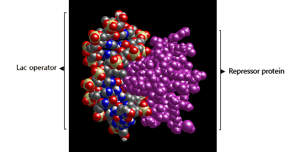

Molecular Genetics of Prokaryotes Problem Set
Problem 9: Phenotype of lac I- cells
Tutorial to help answer the question
An E. coli strain is lac I . The lac I . The lac I DNA sequence encodes the lactose repressor. How would you describe the regulation of lactose metabolism in these cells? DNA sequence encodes the lactose repressor. How would you describe the regulation of lactose metabolism in these cells?
|
Tutorial
Structure of lac repressor protein bound to lac operator
|
The lac I gene is the regulatory gene of the lac operon. The lac I gene encodes the lac repressor protein. When lac repressor protein is bound to the lac operator DNA sequence, mRNA synthesis from the structural genes of the operon is blocked. In a lac I mutant, active repressor protein is not synthesized. As a result, mRNA synthesis from the lac operon is constitutive, and there is constitutive expression of the lac Z gene product, ß-galactosidase.
The structure of the complex formed between the lac repressor protein DNA binding domain and the lac operator DNA sequence is shown in the figure:  |


University of Arizona
Updated: July 15, 1999
Contact the Development Team
http://www.biology.arizona.edu
All contents copyright © 1998-99. All rights reserved.